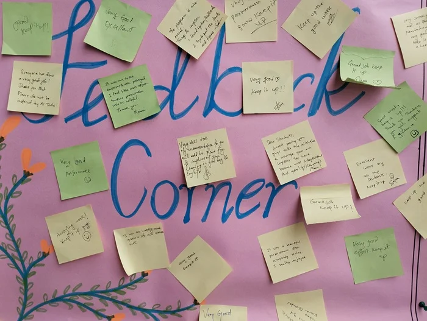

“Why?”
“Why not?”
I think that I can convince one to change her/his mind who would suggest against the value of generative AI for writing student feedback.
After all, we need to save time and give little rest to our body and mind which already has nearly drained almost all energy in the working environment of the 21st century schools.
This does not mean that we completely leave the task to the computing devices for we do not want our schools to be fully automated. Do we? I believe that human-to-human exchanges of subjective knowledge, ideas, and ideals shall remain forever in academia and other environments.

In the case of writing feedback to our students, we may want to provide key descriptions of our pupils, followed by short suggestions. For this, we can:
- dictate our verbal feedback using the software, followed by using the generative AI tools to rewrite the feedback in the required tone and correct language
- give draft commentary to generative AI tools so that these can create clear student feedback for us.
Once one logs into the system of ChatGPT, Gemini, or other generative AI technologies, the prompt that s/he gives is important for generating the texts. In this article, I share few prompts that I used.
Using Dictate Tool and ChatGPT/Gemini for Writing Student Feedback.
These steps are quite organic because they involve in deeper formulation of verbal texts for the students of concern.
- Use dictate tool in Word processing software, or any other software to convert verbal comments into text.
- Use ChatGPT/Gemini to rewrite those texts for clear language with rework on structure, tone, language etc.
- When these technologies generate the feedback text, you may publish straightaway or edit a bit beforehand.
Some ChatGPT/Gemini prompts for writing student feedback.
Rewrite this student feedback that succinctly provides information on the student’s strength (s), weakness (w) and action (a). I am going to publish the same so that parents get a clear message about the ward in subject.
Angel is a very hard-working student. Apparently, she has been struggling hard in academics, especially in mathematics. She also stays withdrawn when the situation demands expressing and communicating. However, I can suggest that she can make use of other skills and competencies in combination with developing communication skills for getting more confidence.
Refinement prompts.
While working with generative AI tools, one may want to get refined responses. Some examples of refinement prompts are given below.
Can you please write in 1 paragraph?
Can you rewrite the feedback in bullet points?
Rewrite in 3-4 sentences?
Benefiting from the ocean of generative AI may not do harm if we try to learn the language and presentation while doing it. The key thing not to forget while harnessing the potential of generative AI is keeping the true message, remaining honest with our work and remaining confident by cross checking the outputs.
I hope that my post provided some value to your reading. I would reiterate that it is humans who thrive in the education industry- educators, students, parents, and the range of professions involved.